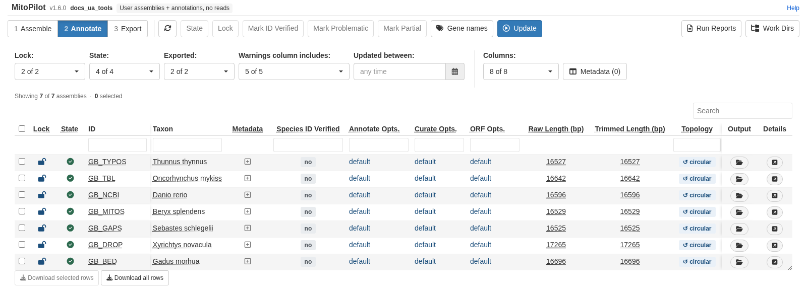
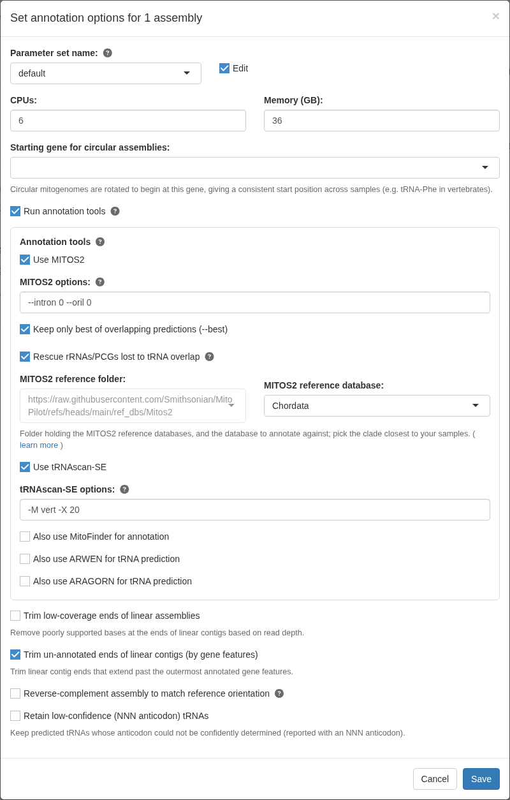
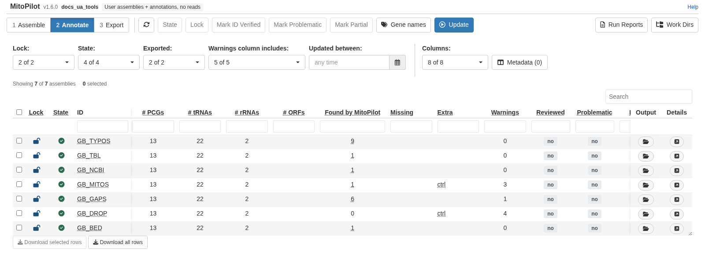
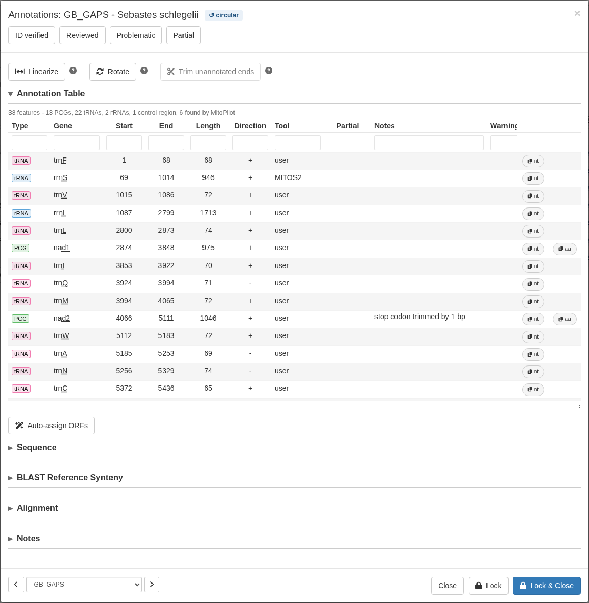

Using Your Own Annotations
This page is for projects where you already have both a mitogenome assembly and an annotation for every sample. Initialize such a project with new_project_userAnnot(). MitoPilot will import your assembly and features, ask you to confirm the gene names, then curates validate, and export the annotations them like any other project.
Read Starting Your Own Project and Using Your Own Assemblies first. This page covers only what differs.
Tip. new_test_project_userAnnot() builds a ready-to-run test project consisting of NCBI RefSeq fish mitogenomes, with annotations in every supported format and some gene names deliberately left for you to fix. Try it before running your own data.
Setting up the project
The mapping file takes the user-assembly columns (Assembly and Topology) plus one more (Annotation):
| Column | Contents |
|---|---|
Assembly |
File name of the assembly FASTA for the sample. Exactly one sequence per file. |
Topology |
Optional. circular or linear. Any sample with this unspecified defaults to linear. |
Annotation |
File name of the annotation for the sample: GFF3 (.gff, .gff3), BED (.bed), or a GenBank 5-column feature table (.tbl). |
The sequence ID inside each annotation must equal the first word of the FASTA header. For an assembly whose FASTA header is >NC_002333 Danio rerio mitochondrion, the ID is NC_002333 and each format carries it like so:
GFF3, first column of every feature line:
##gff-version 3
NC_002333 RefSeq gene 951 1019 . + . ID=gene-trnF;Name=trnF
NC_002333 RefSeq tRNA 951 1019 . + . ID=rna-trnF;Parent=gene-trnF;product=tRNA-PheBED, first column of every line:
NC_002333 950 1019 tRNA-Phe 0 +
NC_002333 1019 1971 12S rRNA 0 +GenBank feature table, the >Feature line at the top of the file:
>Feature NC_002333
951 1019 gene
gene trnF
951 1019 tRNA
product tRNA-PheSee Accepted gene names for details about gene names.
Copies of your original files are kept in <project>/user_annotations/raw/.
new_project_userAnnot(
path = "~/my_annotated/run_01",
mapping_fn = "~/my_annotated/mapping.csv",
assembly_path = "~/my_annotated/fasta",
annotation_path = "~/my_annotated/annotations",
no_raw_data = TRUE
)Reads are optional. With data_path and R1/R2 columns, the Assemble module maps them to calculate coverage. Specify no_raw_data = TRUE if you do not have sequence reads for your samples.
Mitogenome identification, circularization, and scaffold joining are not available for this project type, since any of them would shift the coordinates of your annotation. Coverage trimming and start-gene rotation are off by default for the same reason.
What MitoPilot imports
Aside from the gene name and coordinates, MitoPilot will also attempt to import the following information.
- Partial ends, reading frame (
codon_start), and anticodons. - Pseudogenes, with the note
import: pseudogene. - Free-text notes, as
import: <note>. They are shown in the details window but not written on export. - Introns and ribosomal slippage, as MitoPilot join groups. The feature-table export writes the
ribosomal_slippageandexceptionqualifiers back.
transl_except is not stored. MitoPilot derives it from the shortened stop codon the coordinates give, and export regenerates it.
Every other attribute or qualifier (e.g. locus_tag, db_xref, gbkey) is stored verbatim in project database table user_annotations. MitoPilot does not display or export these, they are kept only for reference.
Reviewing gene names
MitoPilot guesses a canonical gene name for every feature when the project is created. The first time you open the app, the Imported gene names window lists every name from your annotation files with its guess. See Accepted gene names for a list of gene names recognized by MitoPilot.

Fix any wrong guesses with the picker in the gene column or select (drop) for any features you do not wish to include. Expand a row to see which samples and features carry that name. Rows you edit count as Edited and leave the Unmapped view. When you are finished, press Confirm.
Pipeline runs are blocked until you confirm. The app header shows a notice with a Review button until then. Use the Gene names toolbar button to reopen this window at any time. Confirming a second time re-queues only the samples whose gene names actually changed.
Names MitoPilot cannot place, such as ORFs or the light-strand origin (OL). Control-region names (D-loop, control region, OH) import as MitoPilot’s control region feature, ctrl, which exports as D-loop.
Running the pipeline
Once the names are confirmed, start by running Update in the Assemble module. This will only BLAST your mitogenomes and map sequence reads (if available). Then lock the samples and run Update in the Annotate module.
By default, the Annotate workflow does not run any annotation tool. It simply curates and validates your imported annotations.

After running the Annotate workflow, open the details window for each sample. Notes that start with import: were carried over from your file. Any changes made by MitoPilot curation will also be recorded in the Notes column.

The Sequence and BLAST Reference Synteny viewers in that window draw your original annotation as a muted track above the curated one, labelled with the gene names from your file. A feature outlined in amber is one MitoPilot changed: its coordinates or strand moved, curation dropped it, or its name was never mapped. Hover an arrow for the reason and the coordinates as they appear in your file. A name change alone (COI becoming cox1) is not marked. The track follows the Linearize and Trim buttons; a feature a trim cuts through is drawn clipped and marked as such. Untick “Original” in either viewer to hide it.
When done reviewing, you may continue with Export as usual.
Filling gaps with MitoPilot’s tools
By default MitoPilot annotates nothing when you provide the annotations. However, if your annotations are incomplete, MitoPilot’s own tools can help fill the gaps.
In the Annotate options window, tick Run annotation tools. When it is on, the tools chosen in the Tools box run on each assembly. If these tools identify a missing annotation, they add it to your sample.

Your annotations always win. A feature identified by MitoPilot is dropped when it overlaps one of your annotations with the same gene name, or when more than 10% of its length overlaps any of your features.
The Annotate table has a Found by MitoPilot column that reports the number of features added per sample. Hover over the number to see additional details.

In the details window of the Annotate module, the “Tool” columns lists the source of each feature.
For example, in the test project, the annotation for sample GB_GAPS is deliberately missing cox2, nad3, trnD, trnK, and rrnS. If you run this sample with MitoPilot annotation enabled, you should see all of the missing features are added back.

Test project details
new_test_project_userAnnot() creates seven samples, each a RefSeq fish mitogenome with small simulated reads:
| Sample | Annotation |
|---|---|
GB_NCBI |
NCBI GFF3 with the full gene/mRNA/CDS/exon hierarchy |
GB_TBL |
NCBI feature table with anticodons |
GB_BED |
BED, with one gene split into two blocks |
GB_TYPOS |
GFF3 with odd and misspelled gene names; several are left for you to map |
GB_DROP |
Feature table with features that are dropped or flagged on import: gaps, a pseudogene, ribosomal slippage, partial ends, a gene spanning the origin, and two control-region features |
GB_MITOS |
MITOS2-style GFF with lowercase names and numbered tRNAs |
GB_GAPS |
GFF3 missing five genes (cox2, nad3, trnD, trnK, rrnS); turn on Run annotation tools to see MitoPilot fill them in |
Accepted gene names
You do not need to rename your features before import. MitoPilot recognizes the common names for each mitochondrial gene, ignores letter case, and ignores a trailing word such as gene or CDS (so COX1 CDS is read as COX1). The table lists the name MitoPilot uses and examples of names it recognizes. Any name that MitoPilot cannot parse is shown as Unmapped in the Imported gene names window, where you can assign it by hand.
| MitoPilot name | Examples of recognized names |
|---|---|
cox1 |
COX1, COXI, COI, CO1, MT-CO1, cytochrome c oxidase subunit I |
cox2 |
COX2, COII, CO2, MT-CO2, cytochrome c oxidase subunit II |
cox3 |
COX3, COIII, CO3, MT-CO3, cytochrome c oxidase subunit III |
cob |
COB, CYTB, CYB, Cyt b, MT-CYB, cytochrome b |
atp6 |
ATP6, ATPase6, MT-ATP6, ATP synthase F0 subunit 6 |
atp8 |
ATP8, ATPase8, MT-ATP8, ATP synthase F0 subunit 8 |
atp9 |
ATP9 |
nad1 to nad6 |
ND1, NAD1, NADH1, MT-ND1, NADH dehydrogenase subunit 1 |
nad4l |
ND4L, NAD4L, NADH4L, MT-ND4L, NADH dehydrogenase subunit 4L |
msh1 |
msh1, MutS |
dpo |
dpo, polB |
rrnS |
rrnS, 12S, 12S rRNA, s-rRNA, SSU, MT-RNR1, small subunit ribosomal RNA |
rrnL |
rrnL, 16S, 16S rRNA, l-rRNA, LSU, MT-RNR2, large subunit ribosomal RNA |
trnA to trnY |
trnL, trnL1, trnL(uaa), trnL-UAA, tRNA-Leu, tRNA_Leu, tRNA-Leu (CUN) |
ctrl |
D-loop, control region, displacement loop, CR, OH |
tRNAs are named by the one-letter amino acid code (trnL for leucine, trnS for serine, and so on). The two leucine and two serine tRNAs both import as trnL and trnS. Anticodons are imported when your file provides them.
The gene picker in the Imported gene names window also offers mttb, lagli, rvt, im, and trnX (a tRNA of unknown type).